学习的历程
大学期间没有做过很厉害的事情，唯一能让我觉得有一点自豪的事就是能够每天能够坚持学习计算机相关知识
step: 1
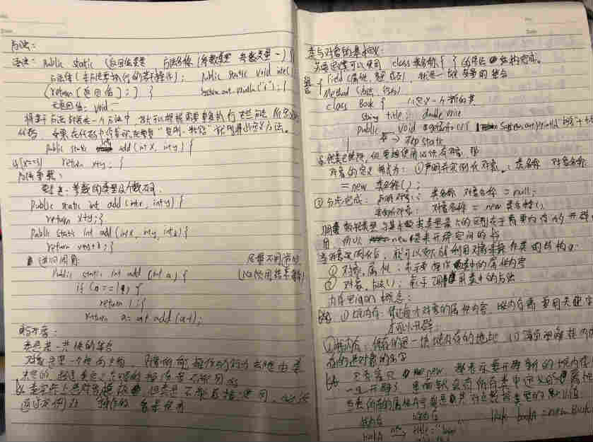 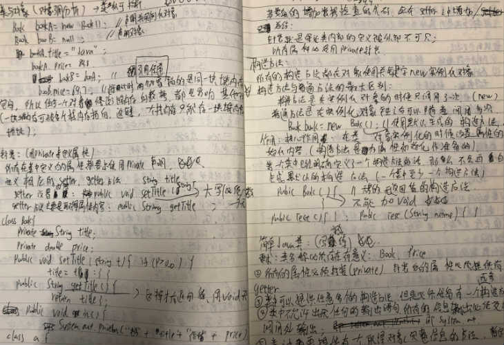 刚开始学习的我总是看很多的视频，并且用笔记本记录内容，这样的本子我大概记了3本左右。此时的我虽然看了很多的视频因为没有自己的思考以及代码量积累，却迟迟不得编程的要领
step: 2
后来发现这种方式具有很大的局限性，后来就选择了用有道云笔记来记录笔记

万事开头难，每学习一个新的知识的时候，总是需要搭环境以及配参数，因此每次都会将安装的过程中的一些步骤以及出现的一些问题记录下来，以便下一次的查阅
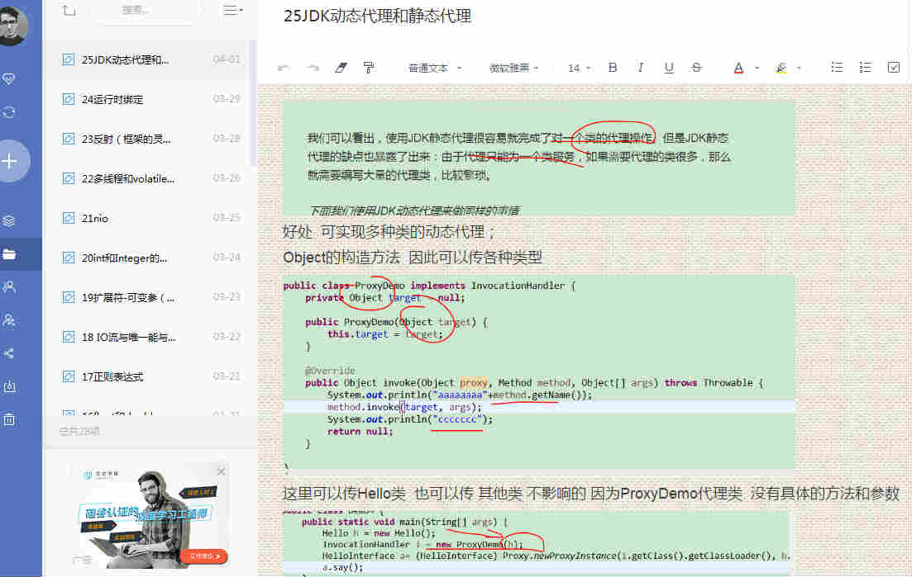学习过程中会经常看一些博客，并将自己的一些思考记录下来。
step: 3
这阶段学会了将自己的代码提交到github，并且偶尔在github上提出自己的一些问题。
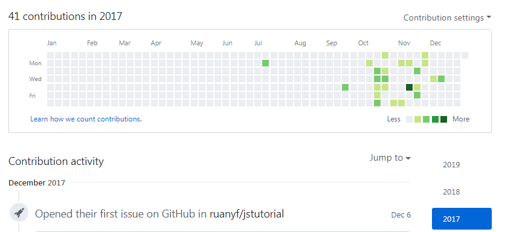 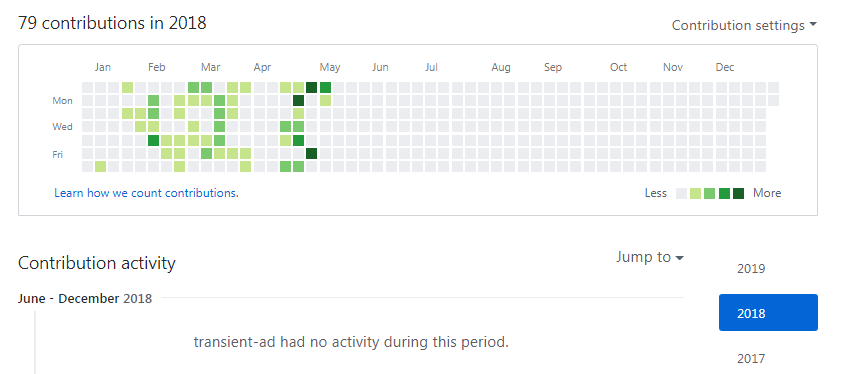 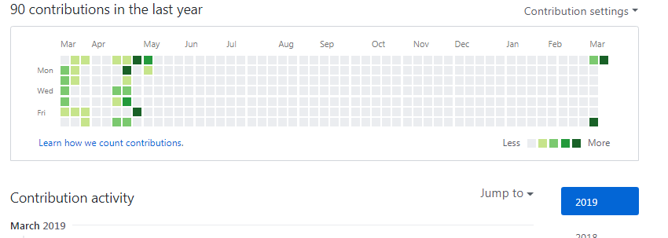 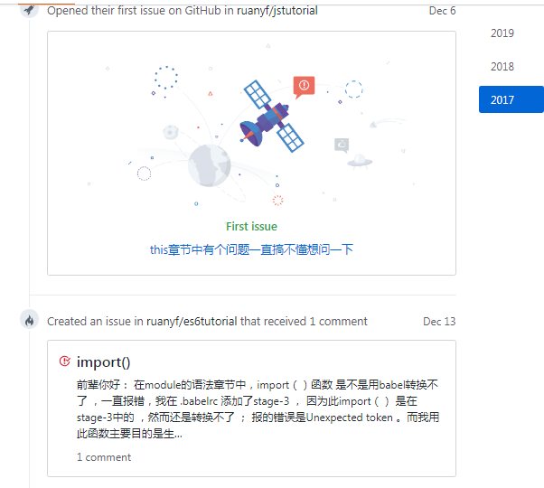学习就是一件痛并快乐着的事
step: 4
自己动手做了一个小项目
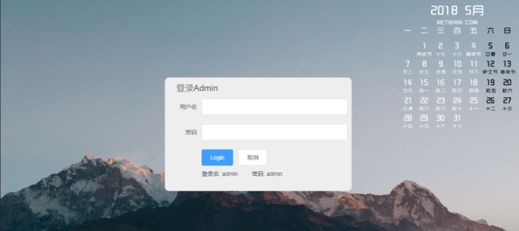登录页面
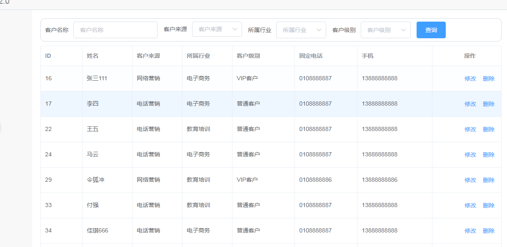查询功能
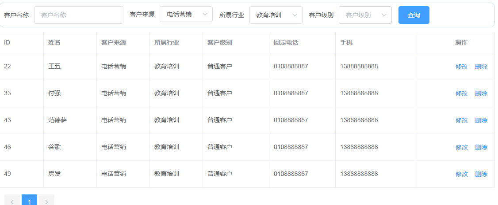修改以及删除功能
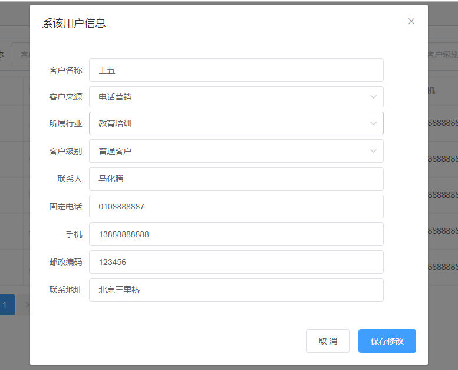这是一个基于spring，springmvc，mybatis以及前端vuejs的一个前后端分离的小demo